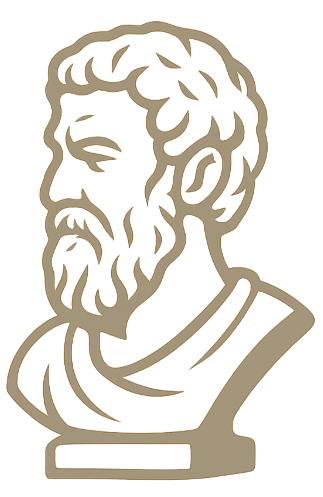

Stoïcisme Moderne
Nouvelle citation
J'ai envie d’y réfléchir
Copier
Filtrer par auteur :
Suivant
J'ai envie d’y réfléchir
Copier
Paramètres à venir…
Mode sombre, export favoris, et plus…
Accueil
Parcourir
Favoris
Historique
Paramètres